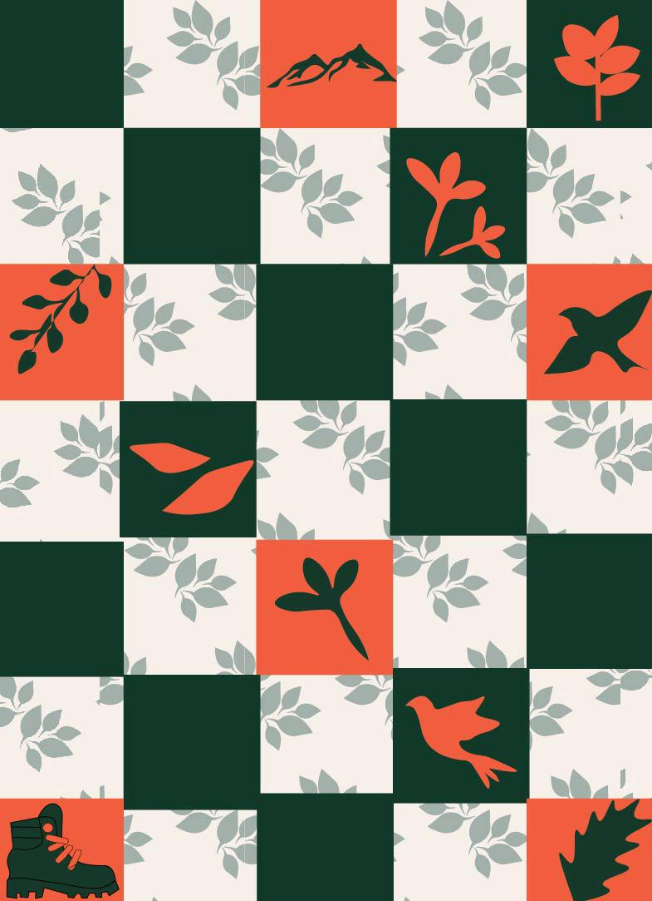
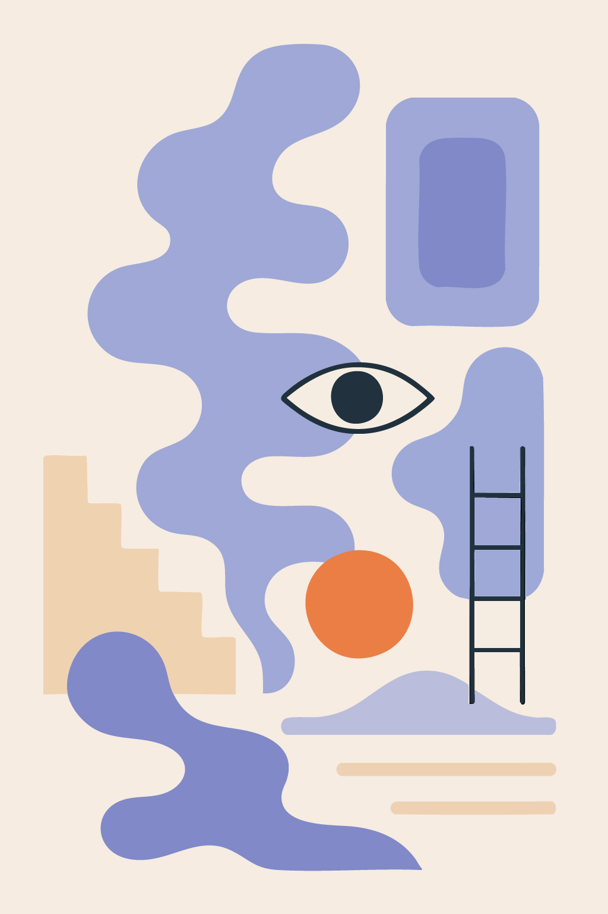
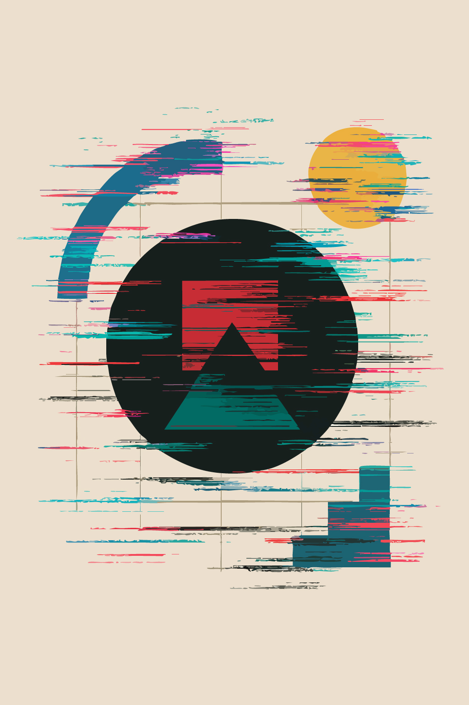
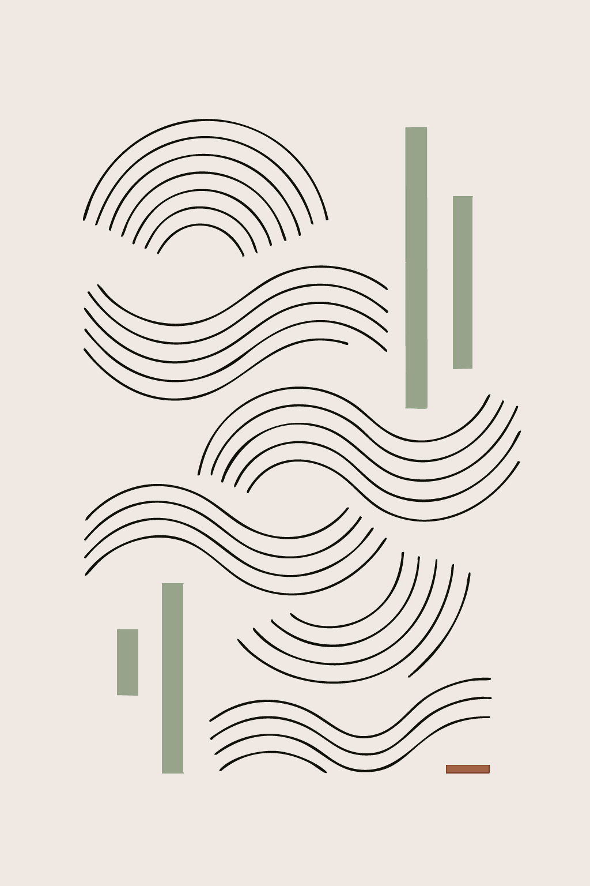
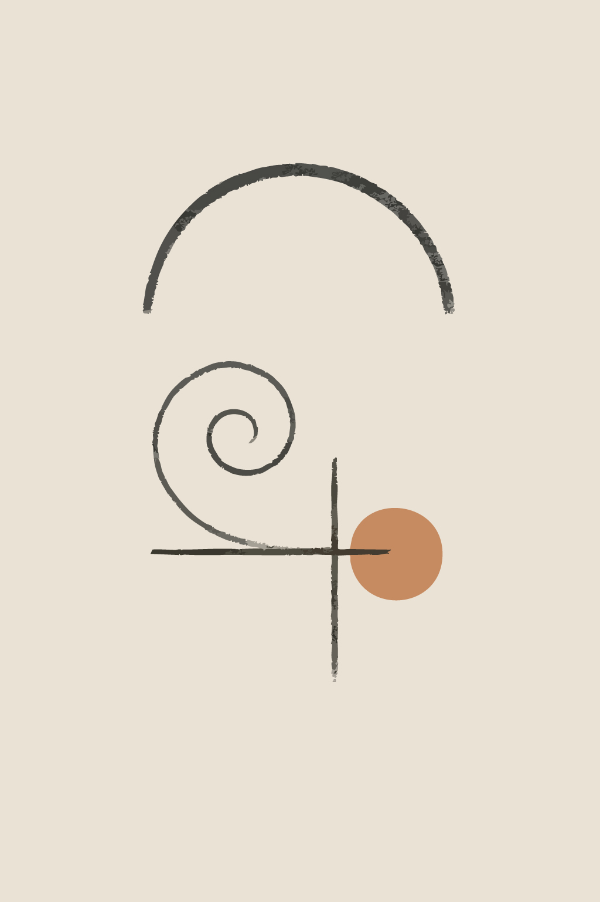

<Illustrations />
Nature's Grid Poster
This design uses a checkered pattern as a foundational grid, symbolizing order. Within this grid, stylized icons of nature—mountains, leaves, birds, and a hiking boot—are placed to create a visual rhythm inspired by classic block printing.

A Study in Abstract & Minimalist Forms
This collection demonstrates a range of styles, from complex abstract scenes to simple, meditative compositions that explore minimalism and rhythm through shape and color.



